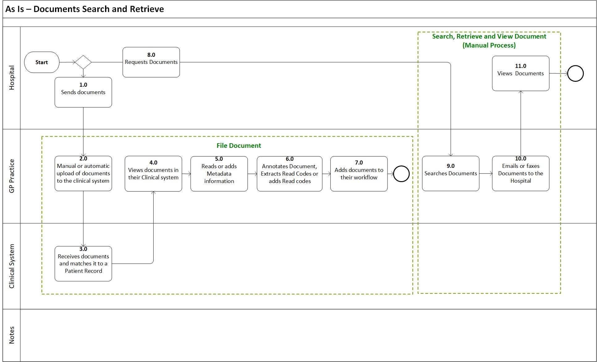
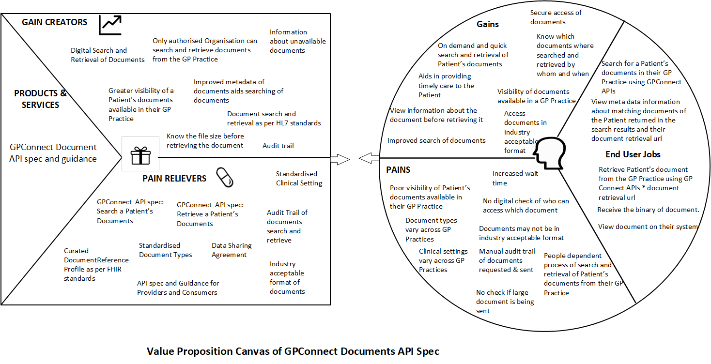

What is a document?
A clinical document (CD) is a written, printed or electronic record that provides evidence of medical care. Clinical documents must be accurate, timely and reflect specific services provided to a patient. Clinical documentation is used to facilitate inter-provider communication, allow evidence-based healthcare systems to automate decisions, provide evidence for legal records and create patient registry functions so public health agencies can manage and research large patient populations more efficiently.
Problem statement
A patient’s GP practice is custodian of patient’s clinical documents received from various health and care settings. Other practices and healthcare settings are not able to electronically search for a patient’s document in the patient’s GP practice and retrieve those documents. This is usually a manual process whereby other GP practices and healthcare settings ask a patient’s GP practice for documents of the patient. The patient’s GP practice then emails or faxes a patient’s documents. This can lead to loss of valuable time and effort of GP practice’s staff.
Objective
Enable health and care organisations to electronically search for and retrieve patient’s clinical documents from their GP practice. Standardise the search and retrieval of clinical documents from the GP practices using GP Connect API Standards.
As is

Process steps
| Id | Title | Description |
|---|---|---|
| 1 | Send document | Hospital sends document to the GP practice |
| 2 | Document upload to clinical system | The document is manually or automatically uploaded to the clinical system of the GP practice. |
| 3 | Document matched to patient record | The clinical system matches the document to the patient record. |
| 4 | File document | Clinician views the document in their clinical system. |
| 5 | File document | Clinician reads or meta data information to the document. |
| 6 | File document | Clinician extracts read codes, add read code or annotates the document. |
| 7 | File document | Clinician add the document to a workflow. |
| 8 | Request document | Hospital request for a document of a patient from its registered GP practice. |
| 9 | Search document | Clinician in a GP practice searches for the document. |
| 10 | Send document | Clinician emails/faxes the document to the hospital. |
| 11 | View document | Hospital receives and views the requested document. |
Value Proposition

Known issues
- Lack of versioning of documents in the GP practices. DateTime stamp is used to identify the latest version of the document.
- No nationally agreed list of document types - GP practices have their own list of document types, which may also include free text.
- Poor metadata of documents - GP systems have poor metadata information about documents.
- Documents in disparate systems in a GP practice - documents metadata information and its versions may exist in disparate systems in a GP practice. However, documents and its basic information does sync back from document management systems to the clinical system.
Scope

Use case

Documents classification
Document types vary across GP practices and may contain free text. Requirements analysis and Professional Record Standards Body (PRSB) documentation identifies a demand for a clear classification of documents. To address this issue, GP Connect has created a valueset of document types. It is based on the clinical document indexing standards created by NHS Scotland. Providers would map their document types to the GP Connect document types valueset. Where the providers have a code that does not exist in the value set, they can provide their code and its value in the text field. This would improve the standardisation of document types across the GP practices.
Patient records where documents are not available
GP clinical systems may have some migrated patient records that have information about the document but the document is not available to the clinical system. To resolve this, GP Connect APIs would return a placeholder for the document specifying that there is a document but it is not available. The metadata information about the document would provide information about the authoring organisation of the document from where the document can be requested.
Document format
Providers to provide documents in the following industry acceptable format:
- Plain Text (text/plain) - .txt
- HTML Text (text/html) - .html, .htm
- PDF (application/pdf) - .pdf
- XML Text (text/xml) - .xml
- RTF Text (text/rtf) - .rtf, .rtx
- Basic Audio (audio/basic) - .au
- PNG Image (image/png) - .png
- GIF Image (image/gif) - .gif
- JPEG Image (image/jpeg) - .jpg, .jpe, .jpeg
- TIFF Image (image/tiff) - .tif, .tiff
- MSWORD (application/msword) - .doc
- MSWORD (application/vnd.openxmlformats-officedocument.wordprocessingml.document) - .docx
- DICOM
Multiple versions of the document
A GP practice may have multiple versions of the same document of the patient in their clinical system. Providers would only return latest version of the document via the GP Connect APIs.
Internal or external documents
The GP practice from which the document is being requested is the custodian of the document. Requirements analysis suggest that end-users would like to understand if the patient document that they are retrieving from the GP practice is an internally generated document in the GP practice or an external organisation has sent that document to the GP practice. If the ‘Authoring Organisation’ of the document is same as custodian of the document then it’s an internally generated document. If the ‘Authoring Organisation’ of the document is NOT the same as custodian of the document then it’s an externally generated document.
File size of the document
End-users would like to know the size of the document before retrieving the document. Providers would return the file size of the document in the response payload for Search Document GP Connect API request.
Multiple systems/providers being used in a GP practice to manage documents
A GP practice may use document management systems for managing documents besides the clinical systems. The documents held in document management system sync to the clinical system along with its basic information such as document type, clinical setting, organisation, description and date. Any read codes extracted in the document management system is also synced to the clinical system. This is done so that, in case when the document management system is unavailable, the document is still available in the principal clinical system and vice versa. GP Connect APIs would search for documents and retrieve documents only from the clinical system.
Document Status
Document Status would always have default value of ‘current’ as only the latest version of the document is retrievable from a GP Practice.